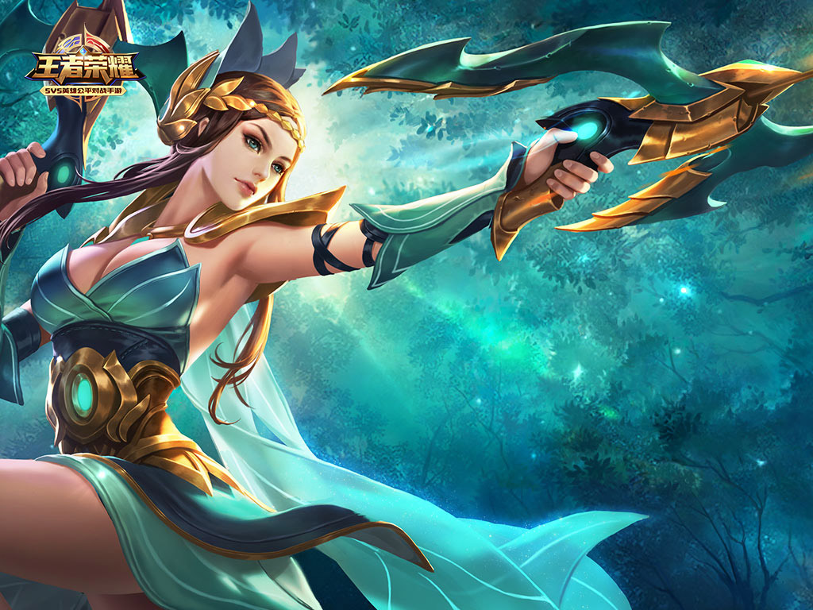
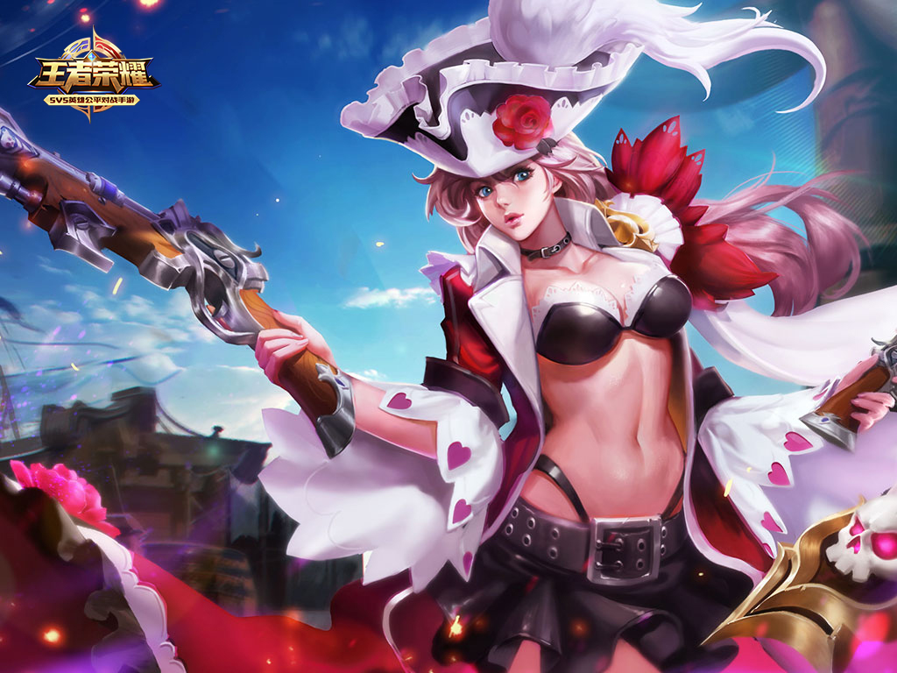
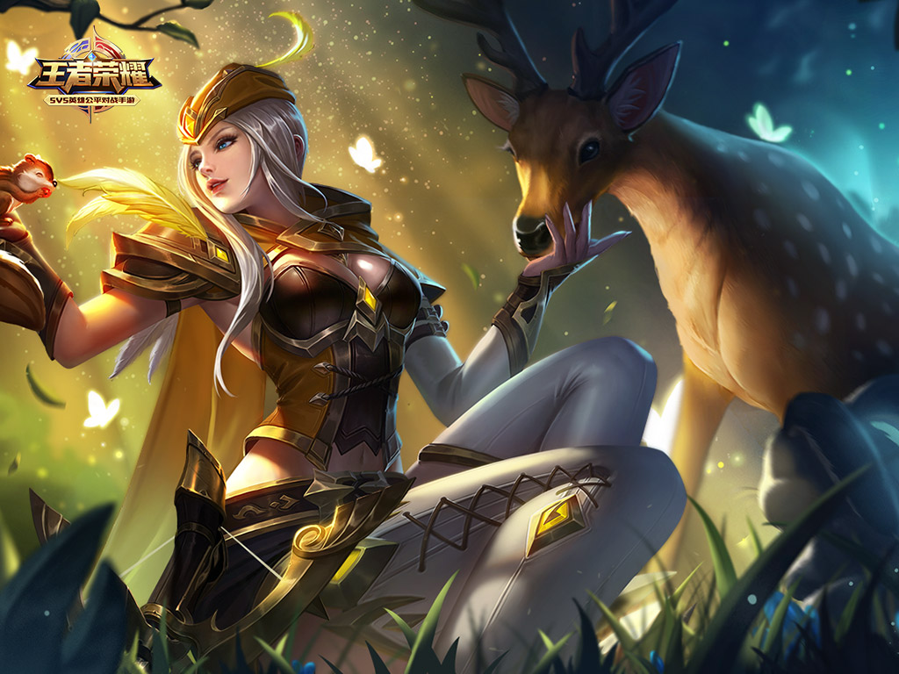

大河之畔，依然秉持着太古和自然的信仰。古老的寺院中，树一样的女郎倾听着风的声音成长。她与藤萝和鸟儿为伍，射出的箭附着自然之灵的祝福。她仰慕自己的老师——传奇的太古魔导，坚信全部信仰和力量都是用来守护大河之民们免受魔种的侵蚀。
当太古魔导离开寺院继续寻求对抗魔神王的同盟前，吩咐虞姬展开巡游之旅。旅途中，虞姬邂逅了那勇猛无匹的战士。
只有他站出来反抗阴阳家们的残暴，只有他立誓集结大河之域的力量对抗暴秦。虞姬与他并肩作战，忠实执行驱除魔种的使命。相比之下，刘邦那种狡诈贪婪，运用可疑力量的家伙，正像老师预言中威胁大陆的魔神王。
阴阳家统治最终崩溃。然而楚汉之地只需要一位王。鸿门宴的谈判破裂后，项羽和刘邦的大军，对峙于名叫垓下的地方。大战前夕，风捎来了师兄张良的邀约。
河畔的丘陵，久违的师兄吐露了残酷的真相：项羽的命运中，只看到无穷无尽的轮回，无穷无尽的黑暗——曾经和张良接触的短暂瞬间，“奇迹”传达了这样的预言。所爱的人，才是立誓所要对抗的人。曾经坚信不移的正义和爱情，轰然崩塌。
相遇，相知，以为的真实其实都是被命运操纵的虚幻。
“你能办到……给予尚未觉醒的魔神王致命一击。” 张良如此劝说。“这不正是你长久以来的心愿吗？”
不。
办不到。
无法背叛。
无法背叛内心。
虞姬猛然惶恐的发现，从什么时候开始，那个人比老师的嘱托，比一起长大的师兄更重要了呢？
师兄的面孔变得模糊，幻术的伪装急速褪却。那并非真正的张良，而是不认识男人的脸……恍惚的虞姬意识为神秘力量牵引，这是精心编制的陷阱。虞姬，可怜的虞姬，她不知道，信仰，誓愿乃至引以为豪的自然之力统统无足轻重。成为击破魔神王的弱点——就是她自身存在的最大意义。全部命运已在他人的博弈中注定。
项羽陷入了重重围困，一夜的奋战，无法阻止他寻找虞姬……他的伙伴，他的友人，他的所爱。可女郎的身影却从敌人的阵营中漫步而出……被背叛了吗？不，那不是真正的虞姬……感受不到恋慕之人的心跳，面容美丽如同傀儡。虞姬……你可已了解我的心意……握紧的大剑渐渐松开，看着弩箭穿透了自己的身躯。
黑暗中，名叫韩信的男人露出微笑。这正是他等待已久的……一击必杀的时机。
风起云涌。楚汉之地的风暴，能在历史上永久留下姓名的风暴，刮起来了。
谁是螳螂，谁是黄雀？
“风会带走你曾经存在的证明。”
返回顶部 返回首页